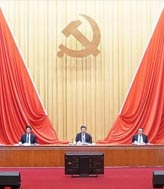
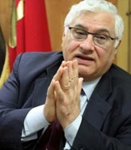

Especial China
Contenido Patrocinado
Ex líder del partido marroquí afirma que se han alcanzado...
“Logros de PCCh merecen ser estudiados”, dice miembro...
"Mantener vínculos cercanos con el pueblo es la clave del éxito...
El compromiso de China con países africanos es genuino...
“El PCCh es un gran ejemplo de cómo lograr 'un auténtico...
“El centenario del PCCh representa un hito en el desarrollo de...

“Los logros de China bajo liderazgo de PCCh son...
“Los logros de PCCh no tienen comparación en la historia”...
“El PCCh lidera el éxito de China y trae beneficios globales...
“El socialismo con características chinas enriquece el marxismo...
“La fuente de la fuerza del PCCh es el amor por su gente...
“Lo que ha logrado China sirve de ejemplo para países...
“El éxito de China en alivio de la pobreza demuestra...
“El desarrollo pacífico de China es un ejemplo para...
Adaptación del marxismo a contexto chino, es la clave del éxito...
“El desarrollo milagroso de China se ha logrado bajo...
“PCCh siempre se mantiene del lado del pueblo chino”, según...
“Gobernar para su pueblo, una cualidad preciosa del PCCh”...
“El éxito de PCCh radica en los estrechos lazos con el pueblo...
“El pueblo chino tiene más confianza y es más...
“El desarrollo de China presenta oportunidad para la economía...

PCCh se ganó la confianza abrumadora de los chinos...
“PCCh trabaja para servir al pueblo chino”, dice miembro...
Líder de Partido Comunista de Jordania elogia la filosofía...